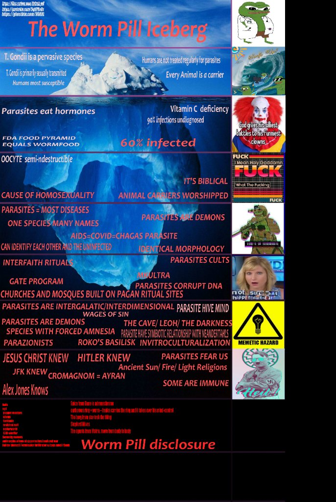

I have no idea how to introduce this subject and how to organize this page, so I'll just post disjoint bits of information and let you draw your own conclusions.
I'll start with sharing the resources that introduced me to the subject. Both of them are written and compiled in an incredibly schizophrenic fashion; some of it is insane but the content is well compiled. Draw your own conclusions.
It's standard procedure to deworm pets at least once a year. Why not humans?
Taking anthelmintics (antiparasitical drugs, dewormer) is common practice in for instance Brazil, Mexico, the Dominican Republic, which I learned from people living there, and it probably holds true for a bunch of other countries too.
Could it be Western hubris thinking that we think we are beyond pests?
Did we forget that "cleanliness is next to godliness"?
Could parasite infection be a contributing factor in male homosexual behavior?
Possibly a long stretch but worth considering:
Possibly a long stretch, but here's a man claiming dog dewormer cured his cancer.
Why is ivermectin such a big deal? Could there be any truth to it?

{kind=link}
{kind=link}
{kind=link}
{kind=link}
{kind=link}